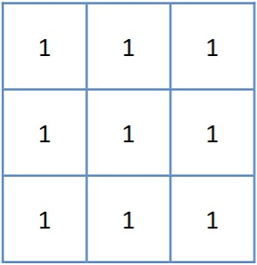
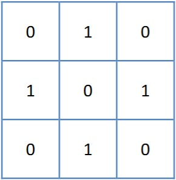

二维顺序统计量滤波
B = ordfilt2(A, order, domain)
B = ordfilt2(___, padopt)
B = ordfilt2(A, order, domain) 将 A 中的每个元素替换为由 domain 中的非零元素指定的相邻元素的有序集中的第 order 个元素。
B = ordfilt2(___, padopt) 对 A 进行滤波，其中 padopt 指定 ordfilt2 如何填充矩阵边界。
要滤波的数据，指定为二维逻辑矩阵或二维数值矩阵。
数据类型： single | double | int8 | int16 | int32 | uint8 | uint16 | uint32 | logical
用来替换目标像素的元素，指定为实整数标量。
数据类型： double
邻域，指定为包含 1 和 0 的数值或逻辑矩阵。domain 等效于用于二值图像运算的结构元素，1 值元素定义滤波运算的邻域，下表列出一些常见滤波器的示例：
| 滤波运算类型 | 示例代码 | 邻域 |
|---|---|---|
| 中位数滤波器 | B = ordfilt2(A, 5, ones(3,3)) |  |
| 最小值滤波器 | B = ordfilt2(A, 1, ones(3,3)) | |
| 最大值滤波器 | B = ordfilt2(A, 9, ones(3,3)) | |
| 北、东、南、西邻点的最小值 | B = ordfilt2(A,1,[0 1 0; 1 0 1; 0 1 0]) |  |
数据类型： single | double | int8 | int16 | int32 | int64 | uint8 | uint16| uint32 | uint64 | logical
padopt — 填充方法
"zeros"（默认）| "symmetric"
填充选项，指定为下列值之一：
| 值 | 描述 |
|---|---|
| "zeros" | 用 0 填充数字数据的数组。 |
| "symmetric" | 用自身的镜像翻转填充数组。 |
数据类型： char | string
滤波后的数据，以与输入数据 A 具有相同数据类型的二维数值矩阵或二维逻辑矩阵形式返回。
[1] Haralick R M, Shapiro L G. Computer and Robot Vision: Vol. 1. Reading, MA: Addison-Wesley, 1992. [2] Huang T S, Yang G J, Tang G Y. A fast two-dimensional median filtering algorithm. IEEE transactions on Acoustics, Speech and Signal Processing, 1979, 27(1): 13-18.
在北太天元图像处理工具箱 V1.0 推出